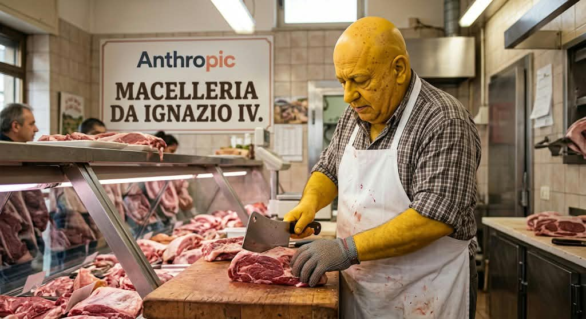

01 — AFFINITÀ DICHIARATA↗
Partito Democratico
Una passione che non ha bisogno di spiegazioni. O forse sì.
LOGO: NICOLA STORTO · CC BY-SA 4.0 · FONTE ↗
01 / IDENTITÀ UNA PERSONA, MOLTE CERTEZZE
Nato in un giorno speciale. Occhi di mamma, forza di papà. Il resto è storia — o almeno così mi piace raccontarla.
SCOPRI IL PERSONAGGIO↓* I dubbi sono in fase di valutazione.

IL TITOLARE«Sono un macellaio.
Infatti lavoro ad Anthropic.»
Piacere, Ignazio IV Tedesco.
Nato in un giorno speciale. Occhi di mamma forza di papà. Sono un macellaio, infatti lavoro ad Anthropic e sono un uomo di cultura.
Lasciate stare il colore della pelle, altrimenti siete razzisti -..-
La politica è una cosa seria. Io, invece, sono una persona seria. Più o meno.
Una passione che non ha bisogno di spiegazioni. O forse sì.

Anche Futuro Nazionale, btw. Contraddittorio? Dettagli.
Le opinioni qui rappresentate fanno parte della costruzione ironica del personaggio. Non cercate un programma elettorale: non lo abbiamo trovato neanche noi.
Un personaggio ironico, una biografia discutibile e una quantità di certezze decisamente superiore alle prove disponibili.
Scrivimi un messaggio. L'indirizzo e-mail è facoltativo: puoi anche restare un mistero.
MESSAGGI IN ARRIVO · 24/7* * La risposta non è garantita. La lettura, forse.